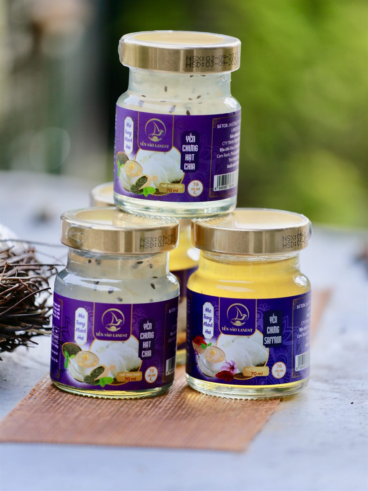
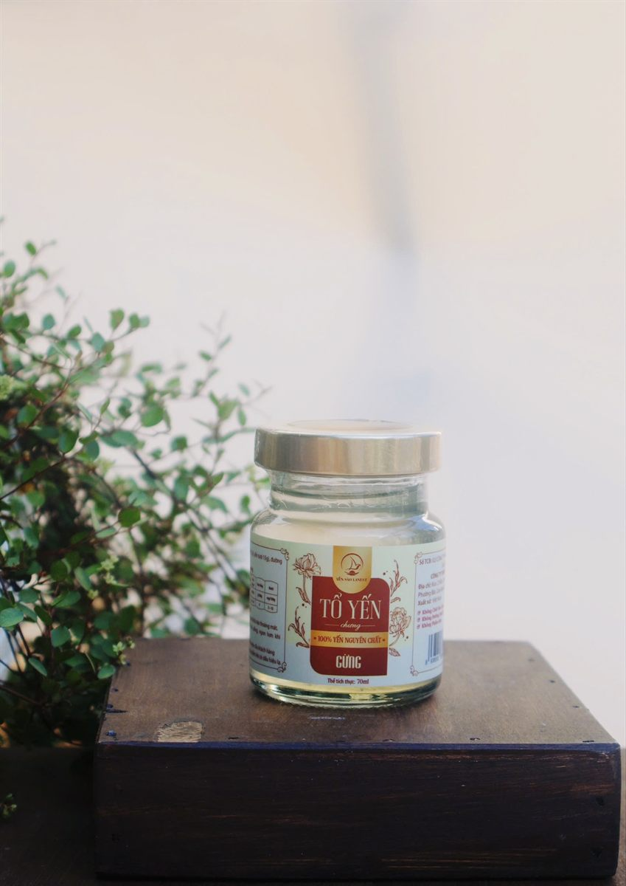

Uống Yến Hũ Chưng Sẵn Mỗi Ngày Có Tốt Không? Nên Dùng Lúc Nào
Yến Sào Lanest · Đăng ngày 09/10/2026

Mua cả lốc yến hũ về để trong tủ, câu hỏi đầu tiên của nhiều nhà là: ngày nào cũng uống một hũ có sao không, và uống giờ nào thì hợp? Yến hũ tiện thật, mở nắp là dùng, nhưng tiện không có nghĩa là uống lúc nào, bao nhiêu cũng được. Bài này gom lại các hướng dẫn Lanest đã đưa ra để anh chị dùng yến hũ chưng sẵn đúng cách: một tuần mấy lần, giờ nào, uống lạnh hay ấm, và chọn vị cho từng người trong nhà.
Yến chưng hạt chia và yến chưng saffron, hũ thủy tinh 70ml, mỗi hũ 7g yến tươi
1. Uống mỗi ngày có tốt không?
Nói thẳng: trong các hướng dẫn Lanest đã đăng, chưa có chỗ nào khuyên phải uống yến mỗi ngày. Bài hướng dẫn dùng yến của Lanest mở đầu bằng chính câu hỏi "càng ăn nhiều yến càng bổ?" và trả lời rằng yến không phải "thần dược tức thì", yến chỉ phát huy khi được dùng đúng.
Về tần suất cho người trưởng thành, tài liệu của Lanest ghi hai mức:
- Bài hướng dẫn dùng yến đúng cách: duy trì 3–5 lần/tuần.
- Bài tổng quan về yến sào: 2–3 lần/tuần.
Cách dễ làm nhất là bắt đầu từ 2–3 lần mỗi tuần, thấy hợp thì giữ đều trong khoảng 3–5 lần. Điều cả hai bài cùng nhấn mạnh là đều đặn: kiên trì dùng đều thay vì uống dồn dập vài hôm rồi bỏ ngang. Một lốc hũ chia đều ra cả tuần sẽ đúng ý hơn là uống liền một lúc cho "hết hàng".
2. Uống lúc nào trong ngày thì hợp?
Nguyên tắc chung trong hướng dẫn của Lanest: không dùng yến ngay sau bữa ăn chính, nên dùng khi bụng nhẹ. Thời điểm cụ thể tùy người:
| Người dùng | Số lần/tuần | Thời điểm gợi ý |
| Người trưởng thành | 2–3 đến 3–5 lần | Tối, trước khi ngủ khoảng 30 phút đến 1 tiếng; hoặc sáng sớm trước bữa ăn |
| Người lớn tuổi hoặc cần phục hồi | Khoảng 3 lần | Sáng sớm hoặc buổi tối, khi bụng nhẹ |
| Trẻ 4–12 tuổi | 2–3 lần | Sau bữa sáng khoảng 1 tiếng |
| Trẻ 1–3 tuổi | 1–2 lần | Giữa buổi sáng hoặc buổi tối trước khi ngủ |
Với dân văn phòng hay người đi làm sớm, một hũ yến buổi tối trước khi ngủ là mốc dễ giữ nhất, vì lúc đó đã cách bữa tối một khoảng và không phải vội.
3. Uống lạnh hay hâm ấm?
Mỗi dòng hũ của Lanest có hướng dẫn riêng, ghi ngay trên sản phẩm:
- Yến hũ 7g yến tươi (14 vị): dùng ngay, hoặc chưng cách thủy nếu muốn uống ấm.
- Tổ yến chưng nguyên chất (3 vị đường phèn, đông trùng hạ thảo, gừng): dùng ngay, ngon hơn khi uống lạnh. Riêng vị gừng, lắc nhẹ trước khi uống.
Nếu muốn uống ấm, hãy làm ấm bằng cách chưng cách thủy nhẹ, không đun sôi trực tiếp. Đây cũng là lưu ý chung của Lanest với mọi món yến: tránh đun sôi, chỉ chưng cách thủy nhẹ nhàng.

Tổ yến chưng nguyên chất vị gừng, hũ 70ml: lắc nhẹ trước khi uống, ngon hơn khi để lạnh
4. Chọn dòng và chọn vị cho từng người
Hai dòng hũ của Lanest khác nhau rõ ở thành phần, anh chị nên biết để chọn cho đúng:
- Dòng 7g yến tươi: mỗi hũ 7g yến tươi, có 14 vị. Thành phần ngoài yến có đường phèn hoặc đường isomalt (với vị ăn kiêng), nguyên liệu theo vị như táo đỏ, hạt sen, đông trùng hạ thảo, cùng collagen thủy phân, chất xơ inulin, chất ổn định và hương yến tổng hợp. Không chất bảo quản, không màu nhân tạo.
- Dòng nguyên chất: mỗi hũ 1,5g tổ yến (tương đương 15g yến tươi), chỉ có nước tinh khiết, tổ yến, đường phèn và nguyên liệu theo vị, không phụ gia.
Về chuyện hàm lượng, người sáng lập Lanest từng nói gọn: "Hàm lượng yến của mình 7g, kiểm nghiệm thật". Còn chọn vị, có thể tham khảo nhanh:
- Trẻ em, Trẻ em vị dâu: dành cho trẻ từ 1 tuổi trở lên.
- Đường ăn kiêng, Đông trùng hạ thảo ăn kiêng: dùng đường isomalt thay đường phèn, cho người cần hạn chế đường.
- Hạt sen, Long nhãn: gợi ý cho người làm việc căng thẳng, người lớn tuổi.
- Đường phèn: vị nguyên bản, hợp mọi đối tượng; Tứ vị: dùng được cho cả gia đình.
5. Mấy lưu ý nhỏ để dùng cho đúng
- Đã mở nắp thì bảo quản lạnh, không để hũ đã mở ở nhiệt độ phòng. Hũ chưa mở để nơi khô ráo, thoáng mát và dùng trong hạn ghi trên nhãn. Chi tiết xem bài cách bảo quản tổ yến và yến chưng.
- Yến hũ là thực phẩm, không phải thuốc và không có tác dụng thay thế thuốc chữa bệnh. Lanest chỉ cam kết chất lượng sản phẩm, không cam kết hiệu quả điều trị.
- Người đang điều trị bệnh (tiểu đường, bệnh mãn tính, đang dùng thuốc), phụ nữ mang thai và trẻ nhỏ có bệnh nền nên hỏi ý kiến bác sĩ trước khi dùng đều đặn, kể cả với các vị ăn kiêng.
- Thích tự tay chưng yến ở nhà thì xem thêm bài hướng dẫn chưng yến đúng cách.
Muốn đọc kỹ hơn cho từng nhóm người, anh chị xem bài yến sào cho trẻ em, yến sào cho người cao tuổi và yến sào cho bà bầu.
Câu hỏi thường gặp
Ngày nào cũng uống một hũ yến có sao không?
Hướng dẫn của Lanest không khuyên uống mỗi ngày; người trưởng thành nên dùng đều khoảng 2–3 đến 3–5 lần mỗi tuần. Quan trọng là đều đặn, không uống dồn rồi bỏ.
Uống yến hũ lúc bụng đói được không?
Được. Hướng dẫn của Lanest gợi ý sáng sớm trước bữa ăn hoặc buổi tối trước khi ngủ, và tránh dùng ngay sau bữa ăn chính.
Trẻ em uống yến hũ được không?
Dòng Yến Chưng Cho Trẻ Em và vị dâu dành cho trẻ từ 1 tuổi trở lên. Trẻ 1–3 tuổi chỉ nên dùng 1–2 lần mỗi tuần; trẻ có bệnh nền thì hỏi bác sĩ trước.